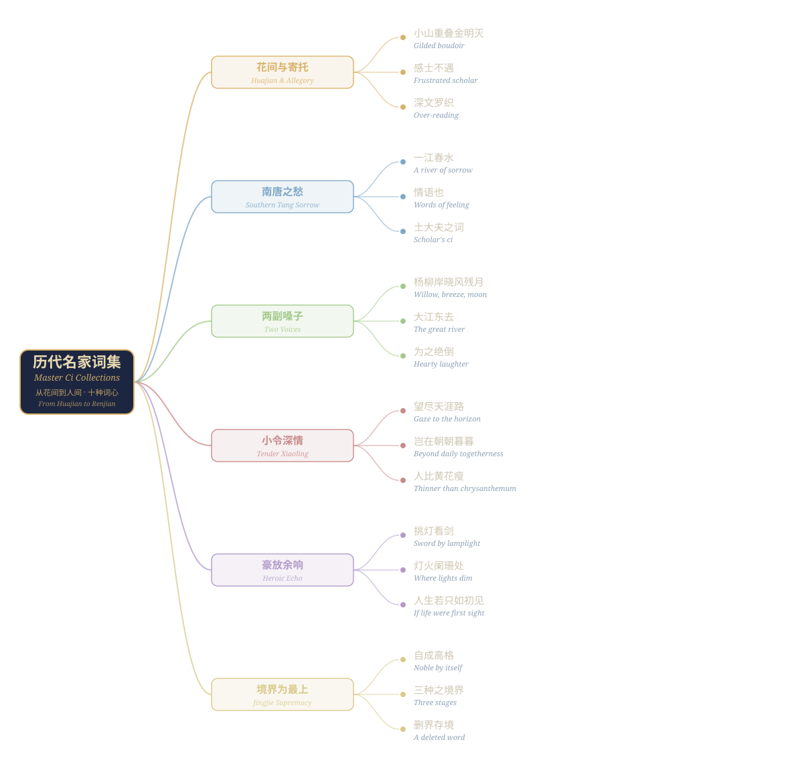

历代名家词集
〇 · 书籍信息
基本信息
| 书名 | 「历代名家词集」是一张千年词史的站位图——十个名字排开就是一条脉络：花间鼻祖（温韦）→ 南唐后主（李煜）→ 市民慢词（柳永）→ 宰相与小令（二晏）→ 以诗为词（苏轼）→ 婉约之宗（秦观）→ 女性写女性（李清照）→ 词中之龙（辛弃疾）→ 清初哀词（纳兰）→ 以词论词（王国维《人间词话》收官） |
|---|---|
| 体例 | 上海古籍词系列导读本——每册原词＋历代评语＋今人导读：温册收张惠言「感士不遇」与王国维「兴到之作」两派之辩；李煜册附李璟、冯延巳；一人一册，眉批俱在 |
| 压卷 | 最后一册《人间词话》——「词以境界为最上」：王国维以境界说统摄前面九家，并留下那个著名的「三种之境界」——词史读到最后，读到的是读词的方法 |
| 一句话 | 温庭筠画金鹧鸪，李煜问一江春水，柳永宿杨柳岸，东坡唱大江东去——十种词心，同一条河：中国人的深情，被这十个名字轮流保管了一千年。 |
一 · 核心主题总览
这套词集里的四组母题：① 花间与寄托之争
开篇温庭筠《菩萨蛮》「小山重叠金明灭，鬓云欲度香腮雪。懒起画蛾眉，弄妆梳洗迟」——同四句词，两派读法打了千年笔仗：张惠言读出「《离骚》『初服』之意」、判为「感士不遇也」；王国维斥为「兴到之作，有何命意？」并批张氏「深文罗织」；叶嘉莹则分析温词「物象多精美，极易令人生发托喻之联想」——一首词的读法之争，就是一部词学史。
② 词为体，愁为魂
李煜把词从歌筵搬进命运：「春花秋月何时了，往事知多少。小楼昨夜又东风，故国不堪回首月明中……问君能有几多愁？恰似一江春水向东流」——明王世贞评：「问君能有几多愁，恰似一江春水向东流。情语也。后主直是词手」——亡国之痛把伶工之词变成士大夫之词，词从此有了装得下人生的容量。
③ 婉约与豪放的两副嗓子
柳永与东坡同场对唱，俞文豹《吹剑录》记下千古段子：「郎中词，只好十七八女子，执红牙按歌『杨柳岸、晓风残月』；学士词，须关西大汉铁绰板，唱『大江东去』」——柳永「多情自古伤离别。更那堪、冷落清秋节。今宵酒醒何处，杨柳岸、晓风残月」，夏承焘甚至考出它「也许即从」温庭筠「江上柳如烟，雁飞残月天」脱化——婉约与豪放不是对立，是同一棵树的两根枝。
④ 境界说收官
压卷《人间词话》立起总尺：「古今之成大事业、大学问者，必经过三种之境界。『昨夜西风凋碧树，独上高楼，望尽天涯路』，此第一境也。『衣带渐宽终不悔，为伊消得人憔悴』，此第二境也。『众里寻他千百度，回头蓦见，那人正在，灯火阑珊处』，此第三境也。此等语皆非大词人不能道」——导读特别点出修改史：王国维删掉原稿「第一境界」的「界」字，「指追求学问的三个层次」，怕人误解为境界的类型。
二 · 第一段 花间与南唐 —— 词的两种出身—— 金鹧鸪 · 一江春水 ——
温庭筠：画出来的词
《菩萨蛮》开篇即是工笔：「小山重叠金明灭，鬓云欲度香腮雪。懒起画蛾眉，弄妆梳洗迟。照花前后镜，花面交相映。新贴绣罗襦，双双金鹧鸪」——闺阁、屏山、金线，全是名词与色彩的堆叠；夏承焘评其第二首「水晶帘里玻璃枕，暖香惹梦鸳鸯锦。江上柳如烟，雁飞残月天」：「上片四句平列两种环境……中间转换处不着一字，而依恋不舍之情自见」——温词的美是物象的美：情绪藏在金玉后面，让读者自己去闻。围绕它的「感士不遇」之争更见词学史：《北梦琐言》甚至记下「令狐相国假其新撰密进之」的宫廷背景，让寄托说多了一层史料支撑——而导读的立场是：「读者尽可欣赏其物象芳丽之美……不必深究其情思背后之事由原委」。
◆ 语言学习 · 概念 · 花间体
| 花间 | 晚五代歌筵词风：物象芳丽、情思幽约 |
|---|---|
| 感士不遇 | 张惠言的寄托读法：男女喻君臣 |
| 兴到之作 | 王国维的反驳：有何命意，深文罗织 |
| 不着一字 | 夏承焘赞温词转境：转换处不着一字而情自见 |
句型 ｜ 「懒起画蛾眉，弄妆梳洗迟。」——花间体的签名动作：用最密的物象写最懒的动作——词的第一课：美可以不靠说，靠摆。
李煜：词的成人礼
《虞美人》把词从酒筵推向人生：「春花秋月何时了，往事知多少。小楼昨夜又东风，故国不堪回首月明中。雕栏玉砌应犹在，只是朱颜改。问君能有几多愁？恰似一江春水向东流」——李煜册还附李璟、冯延巳：南唐君臣把衰亡写成了美学——王世贞一句「情语也。后主直是词手」，点破后主之于词史的意义：在他之后，词不再只是替歌女代言的文体，可以是词人自己的血泪。
◆ 语言学习 · 概念 · 士大夫之词
| 伶工之词 | 歌筵代言：李煜之前词的主流身分 |
|---|---|
| 士大夫之词 | 自写身世血泪：后主开出的新体格 |
| 一江春水 | 愁的量化革命：把抽象写成流量 |
| 附李璟冯延巳 | 南唐词的完整拼图：君臣同卷 |
习语 ｜ 「问君能有几多愁？恰似一江春水向东流。」——词史上最著名的一次提问与自答：愁被写成水的那一刻，词有了装下亡国的容量——文体的成人礼，往往由最疼的人完成。
三 · 第二段 柳永与东坡 —— 两副嗓子—— 红牙按歌 · 铁绰板 ——
杨柳岸与十七八女子
《雨霖铃》下片是柳永的招牌：「多情自古伤离别。更那堪、冷落清秋节。今宵酒醒何处，杨柳岸、晓风残月。此去经年，应是良辰、好景虚设。便纵有、千种风情，更与何人说」——柳永把词写给了市井：慢词长调、羁旅江湖，让词第一次有了「离家的人」的视角；夏承焘甚至考证这七个字「也许即从」温庭筠「江上柳如烟，雁飞残月天」脱化——花间与市民词，隔着两百年递了一只杯子。
◆ 语言学习 · 概念 · 慢词
| 慢词长调 | 柳永的体裁革命：从短令到长篇铺叙 |
|---|---|
| 羁旅词 | 写离家的人：市民视角的进入 |
| 脱化 | 夏承焘的考证：杨柳岸从「雁飞残月天」来 |
| 更与何人说 | 千种风情无处安放：结尾的悬空 |
句型 ｜ 「便纵有、千种风情，更与何人说。」——柳词的收束法：把满腔情绪推到「无人可说」处——词的抒情至此学会了留白：说尽不如说尽不了。
关西大汉唱大江东去
《吹剑录》那段名对话替词史分了声部：东坡在玉堂问幕士：我词何如柳七？对曰：「郎中词，只好十七八女子，执红牙按歌『杨柳岸、晓风残月』；学士词，须关西大汉铁绰板，唱『大江东去』」——「为之绝倒」——两副嗓子不是高下，是词的两种可能；而陈善《扪虱新话》记议者讥「杨柳岸、晓风残月」「此梢子野溷时节也」，柳永自己「最是得意句」——毁誉自古并存，名句都扛得住讥。
◆ 语言学习 · 概念 · 豪放
| 铁绰板 | 豪放的伴奏：关西大汉的高音部 |
|---|---|
| 红牙按歌 | 婉约的伴奏：十七八女子的低音部 |
| 为之绝倒 | 东坡的反应：不自辩而大笑 |
| 毁誉并存 | 名句的宿命：得意句也挨骂 |
习语 ｜ 「学士词，须关西大汉铁绰板，唱『大江东去』。」——词史上最生动的一次分类学：文体的疆界是被笑声划开的——东坡的绝倒，是 knowing 的笑：他知道两副嗓子都是词。
四 · 第三段 二晏秦李 —— 小令的深情谱系—— 昨夜西风 · 两情久长 · 人比黄花瘦 ——
晏殊：宰相的望尽天涯路
《蝶恋花》上片：「昨夜西风凋碧树。独上高楼，望尽天涯路。欲寄彩笺兼尺素。山长水阔知何处」——王国维拿它开讲三种境界，并另评一句：「《诗·蒹葭》一篇，最得风人深致。晏同叔之『昨夜西风凋碧树……』意颇近之。但一洒落，一悲壮耳」——宰相之愁，愁得体面：西风、高楼、天涯路，全是干净的名词，悲而不号。
◆ 语言学习 · 概念 · 小令
| 洒落 | 王国维评晏词的质地：与《蒹葭》的悲壮对举 |
|---|---|
| 独上高楼 | 第一境的动作：望尽天涯路 |
| 彩笺尺素 | 欲寄无处寄：相思的邮政困境 |
| 宰相词 | 晏殊的身分与词品：富贵气象，不作寒语 |
句型 ｜ 「昨夜西风凋碧树。独上高楼，望尽天涯路。」——三种境界的第一境：迷茫期的正名：先站上高处看清「无所见」，才谈得上第二境的熬与第三境的遇。
秦观与李清照：两处闲愁
秦观《鹊桥仙》把爱情词写出了哲学高度：「两情若是久长时，又岂在朝朝暮暮」——否定了相思诗的默认前提；李清照《醉花阴》则相反，把愁写到具体：「帘卷西风，人比黄花瘦」——吴世昌在温册批语里顺带记了一笔：「易安『帘卷西风』正用此句法」——句法也在词人间流转；她写的不只是瘦，是用黄花量瘦：情感第一次有了度量衡。
◆ 语言学习 · 概念 · 婉约之宗
| 岂在朝朝暮暮 | 秦观的爱情哲学：质量对时间的胜利 |
|---|---|
| 人比黄花瘦 | 李清照的度量衡：以花量人 |
| 女性写女性 | 易安词的身分意义：闺怨不再由男性代言 |
| 句法流转 | 吴世昌的旁注：帘卷西风承温词句法 |
习语 ｜ 「两情若是久长时，又岂在朝朝暮暮。」——情诗里的反骨：拒绝把陪伴当成爱的唯一计量单位——千年后仍在为异地恋辩护：深情不需要打卡。
五 · 第四段 辛纳与人间词话 —— 豪放的余响与总尺—— 挑灯看剑 · 三种之境界 ——
词中之龙
辛弃疾把词当枪使：「醉里挑灯看剑，梦回吹角连营」——稼轩词的武人血统与书生肝胆，让「豪放」二字有了具体的人；而他的《青玉案》「众里寻他千百度，回头蓦见，那人正在灯火阑珊处」又被王国维征用为第三境——豪放派写出了最婉约的一句：词体到南宋，两种嗓子已能一人兼有。纳兰性德接住清初的余韵：「人生若只如初见」——词史最后一座高峰，哀得干净。
◆ 语言学习 · 概念 · 词中之龙
| 词中之龙 | 后人对稼轩的尊号：词的武力值天花板 |
|---|---|
| 挑灯看剑 | 武人的失眠：豪放词的具体动作 |
| 灯火阑珊处 | 第三境的画面：蓦见比找到更动人 |
| 人生若只如初见 | 纳兰的假设句：清词的起点句 |
句型 ｜ 「众里寻他千百度，回头蓦见，那人正在，灯火阑珊处。」——三种境界的第三境：「蓦见」二字是关键——不是找到，是回头时它本来就在：所有长跑的终点都有这个结构。
境界为最上
收官一册《人间词话》，开卷第一句就是总纲：「词以境界为最上。有境界则自成高格，自有名句」——随后是那个被引用了一百年的三段论：「古今之成大事业、大学问者，必经过三种之境界」——导读披露了手稿的修改细节：原稿写「第一境界」「第二境界」「第三境界」，后来改成「第一境」「第二境」「第三境」，「指追求学问的三个层次」，「难免造成误解，误为境界之类型」——一个「界」字的删除，是批评家对自己语言的苛刻：境界说本身，也在追求更好的表达。
◆ 语言学习 · 概念 · 境界说
| 境界为最上 | 《人间词话》开宗明义的总尺 |
|---|---|
| 三种之境界 | 成大事业大学问的三个层次：望路—不悔—蓦见 |
| 删「界」存「境」 | 手稿修改史：怕人误读为类型学 |
| 以词论词 | 王国维的方法：用词句评词人，不另造术语 |
习语 ｜ 「词以境界为最上。有境界则自成高格，自有名句。」——词学的定海神针：不谈格律不谈门派，只问有没有境界——批评史上的奥卡姆剃刀：一把尺子量尽千年。
六 · 人物图鉴与成长弧线—— 主角配角 · 一张表看穿 ——
主要人物
温庭筠——花间鼻祖——「小山重叠金明灭」：把词写成工笔画，物象芳丽而情思幽约——寄托之争千年不决的第一现场
李煜——词的成人礼——「问君能有几多愁」：把伶工之词变成士大夫之词，词从此装得下亡国
苏轼——第二副嗓子——「须关西大汉铁绰板，唱大江东去」：词的疆域从闺阁推到江山
王国维——收官的批评家——「词以境界为最上」：以一把尺量尽千年，还亲手删掉一个「界」字以免误读
次要人物（功能位）
| 柳永 | 市民词的旗手——「杨柳岸、晓风残月」：慢词长调，写离家的人——得意句也挨骂 |
|---|---|
| 李清照 | 易安居士——「人比黄花瘦」：女性写女性的第一人，情感有了度量衡 |
| 辛弃疾 | 词中之龙——「醉里挑灯看剑」：豪放派的第三境「蓦见」也出自他手 |
| 张惠言 | 寄托说的主帅——温词读出「《离骚》初服之意」：与王国维隔代对垒 |
七 · 主题与象征—— 每个道具都在说话 ——
| 金鹧鸪 ↔ 花间 | 词的出身——双护照应闺中人：美先于情，物象先行 |
|---|---|
| 一江春水 ↔ 愁 | 愁的量化——抽象的命运被写成东去的流量：词的容量翻倍 |
| 红牙与铁绰板 ↔ 两副嗓子 | 词体光谱——十七八女子与关西大汉：婉约豪放不是对立是声部 |
| 黄花 ↔ 瘦 | 度量衡——人比黄花瘦：以花量人，情感有了刻度 |
| 灯火阑珊 ↔ 蓦见 | 第三境——「那人正在」：不是找到，是回头看见 |
八 · 写作手法赏析—— 怎么写，就能怎么学 ——
① 词史排序法
十册按时间排开——花间→南唐→北宋→南宋→清→词学收官：套装即通史，目录即大纲
② 评语随行
每首词后附历代评点——王世贞、夏承焘、王国维同场对读：一首词的接受史直接呈现
③ 导读断案
温册导读亲自下判语——「不必深究其情思背后之事由原委」：整理者不当和事佬，亮出立场
④ 手稿学
披露「第一境界」删改细节——连批评家的自我修改都入档：词话也是文本，也会进化
⑤ 姊妹附卷
李煜册附李璟、冯延巳——南唐词君臣同卷：不拆散一个时代
九 · 名段欣赏—— 原文精读 · 逐段赏析 ——
十 · 金句摘录—— 14 条 · 中英对照 · 带出处 ——
"小山重叠金明灭，鬓云欲度香腮雪。懒起画蛾眉，弄妆梳洗迟。"—— 温庭筠 ·《菩萨蛮》
"春花秋月何时了，往事知多少。小楼昨夜又东风，故国不堪回首月明中。"—— 李煜 ·《虞美人》
"问君能有几多愁？恰似一江春水向东流。"—— 李煜 ·《虞美人》
"问君能有几多愁，恰似一江春水向东流。情语也。后主直是词手。"—— 明 · 王世贞《弇州山人词评》
"今宵酒醒何处，杨柳岸、晓风残月。"—— 柳永 ·《雨霖铃》
"郎中词，只好十七八女子，执红牙按歌「杨柳岸、晓风残月」；学士词，须关西大汉铁绰板，唱「大江东去」。为之绝倒。"—— 俞文豹 ·《吹剑录》
"昨夜西风凋碧树。独上高楼，望尽天涯路。"—— 晏殊 ·《蝶恋花》
"《诗·蒹葭》一篇，最得风人深致。晏同叔之「昨夜西风凋碧树……」意颇近之。但一洒落，一悲壮耳。"—— 王国维 ·《人间词话》
"两情若是久长时，又岂在朝朝暮暮。"—— 秦观 ·《鹊桥仙》
"帘卷西风，人比黄花瘦。"—— 李清照 ·《醉花阴》
"醉里挑灯看剑，梦回吹角连营。"—— 辛弃疾 ·《破阵子》
"众里寻他千百度，回头蓦见，那人正在，灯火阑珊处。"—— 辛弃疾 ·《青玉案·元夕》
"词以境界为最上。有境界则自成高格，自有名句。"—— 王国维 ·《人间词话》开篇
"古今之成大事业、大学问者，必经过三种之境界。"—— 王国维 ·《人间词话》
十一 · 拓展阅读—— 原文 · 词条 · 译文 ——
十二 · 个人感悟与心得—— 三点心得 ——
三点感悟
① 读法之争就是学问本身
温词寄托之争的启示：一首词有没有寄托，争吵了一千年——重要的不是裁决，是两派各自逼出了更精细的批评工具：争议是学问的发动机。
② 文体的容量靠疼撑大
李煜的成人礼：每一种文体都要等一个愿意用命写它的人——容量不是设计出来的，是被具体的痛苦撑开的。
③ 给成长留三种境界的耐心
王国维三境的当代读法：「望尽天涯路」的迷茫、「为伊消得人憔悴」的煎熬、「蓦见」的相遇——所有长跑都长一个样：先站高、再熬住、最后回头。
十册读毕，词史其实只讲了一件事：中国人的深情如何找到了一代又一代的保管人——温庭筠保管在金线里，李煜保管在江水里，易安保管在黄花里，稼轩保管在剑光里，王国维则造了一座保管方法的库房——所谓「境界」，不过是一句话：把最真的东西，放在最准的形式里。
十三 · 一页速查（复习用）
| 花间鼻祖 | 温庭筠：物象芳丽，情思幽约 |
|---|---|
| 词的成人礼 | 李煜：伶工之词变士大夫之词 |
| 两副嗓子 | 红牙按歌与铁绰板：婉约豪放是声部 |
| 情感的度量衡 | 人比黄花瘦：以花量人 |
| 境界为最上 | 王国维总尺：三种之境界 |
十四 · 全书思维导图—— 一图纵览 ——

一图纵览全书骨架 · 中英双语对照 · 手机端可左右滑动查看全图